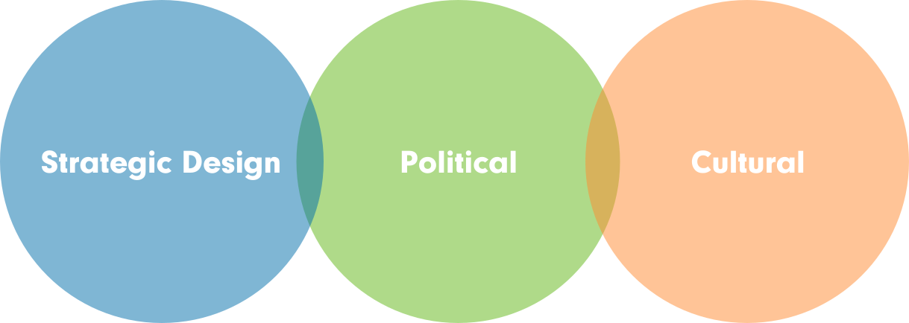
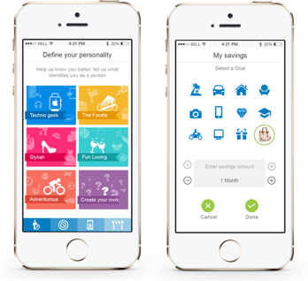
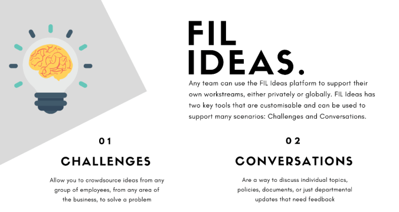
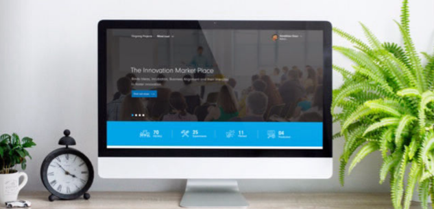

Who We Are
Fidelity International offers world-class investment solutions and retirement expertise to institutions, individuals and their advisers to help its global clients build better future for themselves and generations to come.
Fidelity International, India is an integral part of Fidelity’s international network. The India team works closely with global teams on leading capabilities including Technology, Finance, Customer Operations, Investment Research, Planning & Analytics and Legal & Compliance, providing crucial support in growing the company’s global operations.
Learn more about us at fidelity.co.inWhat we do
Rather than taking the traditional route to innovation, we tried working the other way. For us, our people are our most valuable assests who continuously strive to find better ways to solve problems.
The Traditional Way
Innovation for a designated few
Traditional organizations set up an innovation lab or create an R&D department that is accessible to a designated few.Rigid organizational structure
The capability creation stays at the periphery of the organization, away from the mainstream teams, resulting in the management failing to see the bigger picture.Too much focus on future
In some firms, the philosophy of letting a thousand flowers bloom spawns innovation overload. Being overtly futuristic can cause a serious dent in such organization’s way of growth and innovation plans.Looking at Fidelity through
The Three Lenses provide an unique perspective on how an organisation behaves internally and offer clues for leaders interested in effecting change management.
The First Lens
"Organisation & Structure"
Many published literature on this subject describe a three step serial process to innovation
Ideate Incubate Go live
Traversing this path, we initially started with a process for innovation. However, the journey witnessed its own challenges. We saw ideators abandoning their ideas halfway, lac of support from business sponsors to take the idea to the next level, non-ideators jumping in an ideas deviating from the goal and taking it into a different direction without any validation from sponsors or customers. People were celebrationg the insignificant more while our significant progress-makers were complaining of ignorance.
It was pure madness and nothing went live, but the organistaional energy was now buzzing with new ideas...
Savings App
And then... one promising idea broke through this mayhem and went live.
To our surprise, we found out that it didn’t happen on those intelligently crafted three steps. We eventually realised that innovation is not a workflow rather a complex interplay. Where we start, how we progress and what goes live - none of that follow a linear path. The ideas that went live were those that flowed where the innovation energy is - in terms of ideators’ passion, incubation alignment and business sponsorship.
To deliver in this controlled chaos on a sustained basis, we created an ‘Innovation Marketplace’ where demand for ideas, sponsors, funding and knowledge meet the supply from practitioners/SMEs such as market leaders, business leaders, internal knowledge sources and external knowledge sources like universities, start-ups etc.
“Controlled Chaos - Chaos, randomness, free thinking etc. are critical to designing an organisation for innovation. While we wanted to significantly encourage it widely, we wanted to ensure that we create enablement to tap a “net positive outcome” from this chaos. As we approached the solutions, we ensured that we build for sustainability, low/no cost, inclusive participation, non-hierarchical, scalable, cultural shift etc.”
- Sumit Joshi, Driving force behind our internal incubation capability
FIL Ideas
A single window for ideators to initiate their idea incubation and for like-minded ideators to identify each other and come together
Go/Innovate
Our crowdsourcing platform that connets ideators and business sponsors seeking to solve problems, SMEs and ethusiasts who are willing to contribute.
Show-n-Tell
A platform for ideators, SMEs and enthusiats to share their learnings through demons, videos etc for our people to listen, watch and learn at their own pace
The Second Lens
Underlying Attitudes & Beliefs
If innovation has to everywhere and in everything we do then we need to first build the right culture - a culture that is sustainable and successful over the long run. We need to elevate our current capabilities and simultaneously work towards creating new capabilities to help us stay on the top of the game.
We are a 3,000 people team here in India, representing about half the company’s population. We have seen that at least 2-3% of this population is always willing to volunteer their efforts towards innovation. If we can increase this number to say 30%, imaging the huge momentum it would generate to deliver a realisable value from innovation, momentum to scale, and permeate innovation into our DNA.
"Innovation phenomenon in Fidelity is an outcome of groundswell so we set about to discover how we could democratise innovation to put it on everyone’s agenda. We bring like-minded people across different teams together to visualise and drive that innovation, to identify problems to solve and areas to transform or disrupt." - Sambhav Gaur, Block chain geek and make-it-happen guy
As we learnt from the marketplace, a solid approach needs to be backed by a scalable digital mechanism to achieve that escape velocity, so our response to this cultural ambition to scale our innovation culture are...
CX Zone
The customer experience zones were set up to understand the business and customer closely. We have got six such zones at different floors which are used for induction, team meetings and management visits.
Make It Real
‘Making it real’ sessions are organized on regular basis by different functions to help people understand the product from customer point of view. Business leaders and SMEs are invited to run these sessions.
Every Thing Counts
ETC campaign helped to synergise and crowd source efforts towards technology capability, creation and elevation. The three focus streams currently being pursued within technology are - Training, Innovation and Hiring.
Innovation Garage Workshops
Frequently organise hands on technology (Blockchain, Augmented Reality, Virtual Reality, Artificial Intelligence etc.) workshops in innovation garages, Bringing together knowledge that is a yields of global incubations, multiplying knowledge with people and creating a transparent culture to prepare our people and businesses for future.
Global Innovation Connects
Opportunities to walk extra mile in exploratory turfs of innovation. Constantly evolving innovation framework to foster strong foundation for innovation
MindTrust - Business Pitches
MindTrust (MT) is Fidelity’s version of Dragon’s Den or Shark Tank. It channels the energy of voluntary innovation in the organisation towards achieving real business value. The MindTrust consists of a group of senior stakeholders from the Business and Technology, to whom ideas are pitched in the form of prototypes or proof of concepts (PoCs). They can then approve, kill or pivot these ideas. In doing so, the MT acts both as an accelerator and a mechanism for fast and lean customer feedback.
TEDx Fidelity International
TEDxFidelityInternational is being organized in October and a total of 780 people registered for the event. The TEDx Program is designed to help communities, organisations and individuals to spark a conversation and connection through local TED-like experiences under the slogan "ideas worth spreading". The theme of this year is ‘Disrupted’.
Breaking Leadership Stereotypes
Extended leadership team got together for half a day to re-iterate our vision for future and learn from our significant achievements so far. The agenda included showcasing some of the #elevate # create use cases, presentations on Fidelity International India’s value added capabilities, key metrics and our enabling mechanisms.
NATC - HACKATHON Winners
Fidelity won Nasscom Hackathon Award in November, 2017 for developing a Machine Learning solution using Image Processing and Natural Language Processing to solve the issues around tax collection for the Goods & Services Tax (GST).
Learning from sharing
Speakers represented Fidelity at various external industry conferences and events like CyberSec conf, Nasscom annual tech conference, CTO roundtable, HR tech, Data Analytics conference.
University Partnership with Innovation Garage
It’s an ideal setting to explore the intersections of Fidelity’s business & new technologies like Blockchain, AI, Augmented reality etc.The goal is to deviate from typical internship program & immerse interns in a culture of curiosity, creativity, and innovation that yields fresh mind solutions helping in accelerating business.
Best Employers for Race Listing 2017

Fidelity International received the award for being ‘Gurgaon’s Best Employer Brand’ by World HRD Congress, at a ceremony held in New Delhi on 22 December 2017.
The Third Lens
Influence & Alignment
Given the hype around innovation, it’s easy for people involved to get carried away and miss the target destination. For any organisation, focusing about 70% of the energy on reaching the final destination is crucial. Hence, innovators need a mechanism for feedback to shape an idea, negotiate for sponsorship, or drop the idea altogether.
Shutting down certain ideas as unviable is indeed an acceptable destination. Even when an idea is being shut down, after the initial disappointment, true ideators are quick enough to channelize their energy into the next viable idea. This produces a much better outcome than disillusioning them and switching them off from the organisational innovation energy.
“For it to be real, Innovation efforts need to go through a robust challenge process, that will create and align energy while at the same time, not end up killing energy under the garb of governance” Anshu Chadha, Day job - Delivery Programme Manager, Stretch role - Programme Leader, MindTrust.
There need to be a way for people to negotiate, resolve conflict and obtain sponsorship, where the business case is clear and well-documented. Hence, below platforms were conceptualised for our contributors to negotiate and compete without the fear of failure.
Our own "Shark tank" - Proposition, Business and Leaders who help sponsor our ideators to pause, pivot or pursue their ideas
It enables the business to assess the idea from the ideators’ perspectives, garner reliable business support to initiate execution and help replicate in other areas of the organisation.
Fidelity Extra App for DC Campaign
Through Augmented Reality App ‘Fidelity Extra’ (iOS & Android) our customers can scan an image and relevant video would start giving out product information. This removes the boredom of reading documents and allows them to listen and play the videos while they’re on the move.
Behavioural Finance
A series of new tools for our investment teams powered by artificial intelligence which add a new competitive edge to our investment process was launched Jan 2018. These are entirely proprietary to Fidelity and unique within our industry.
InvestSense
InvestSense is a programme which is primarily a PI proposition for our end customers. It involves generating insights on customer data and their interactions with FIL website. InvestSense will act as an AI layer that will help our customers to effectively use FIL website.
Application Incidence Prediction
Identifying a potential incident by detecting anomalies against historical trends using Machine Learning.
Alexa for HR
Customized skill for HR function to help new joiners with frequently asked questions like transport, leave policy etc.
Virtual Reality Tour of Office Spaces
Created virtual reality office tour to get global employees closer to remote workplaces.
Intelli-Insights
Presents relevant articles (backed by machine learning) to help customers make judicious investment decision.
Intelligent Fund Search
Offering related funds that has similar attributes if we are not having user searched funds.
Accept crypto-currency as a payment option on our EI website
Smarter way to opening our business gateway to crypto world to start accepting payments in cryptos like bitcoin, ether etc.
Increase video visibility on web through Machine Learning
To improve video content visibility and enhance user experience through getting them of search frame.
Hyper personalized Videos on chat bot
To present bespoke videos to customers on our website chat window example summarizing the account summary or projection of investment in persons.
On boarding Employees through Augumented Reality
Employee training that utilizes AR is more immersive, and employees may be more likely to retain what they've learned if they can get hands-on practice while learning.
We’ve set up a network of garages, open for everyone to try out their ideas. This act as incubation for people from different functions and geographical locations to come together, brainstorm, innovate and disperse
The global innovation garages provide a canvas for innovators to express creativity and for employees to re-invent themselves. It helps breaking the silos and fosters the spirit of “re-imagining the future” by allowing people to look far beyond their day jobs, builds a spirit of entrepreneurship and experimentation where even a failure is rewarded and builds a mind-set of “frugal engineering”.
The innovation garage has possibly created the largest global virtual team with a common purpose that is helping in bringing real business acceleration, strengthening FIL brands amongst its peers, providing a platform of people expression, helping on-board, retain talent and preparing the organization to better respond to a VUCA world, short for Volatility, Uncertainty, Complexity and Ambiguity.
100+
Global Contributors
53
Experiments
16
MindTrust approved
11
Experiments Live
US $490M
Worth of new client offerings
as a result of showcasing our innovative use of disruptive technology
US $450K
Additional revenue gathered over existing channels
In last 5 months
Sumit Joshi
+91 9818315056
sumit.joshi@fidelity.co.in